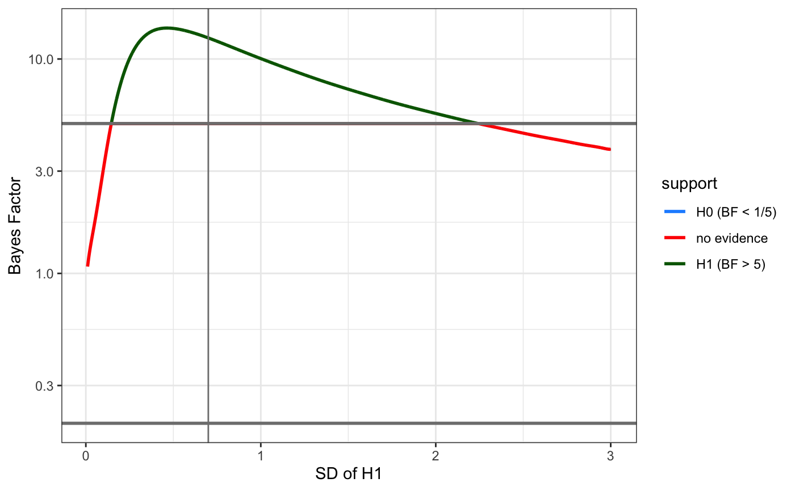

rrnorm.RdBayes Factor with Robustness Region (normal)
rrnorm(sample_mean = 0, sample_se = 0.1, sample_df = 99, theory_mean = 0, theory_sd = 1, tail = 2, criterion = 3, rr_interval = c(0, 2 * theory_sd), precision = 2)
| sample_mean | the observed sample mean |
|---|---|
| sample_se | the observed sample standard error |
| sample_df | the observed sample degrees of freedom |
| theory_mean | the mean value for the theoretical (H1) distribution |
| theory_sd | the SD for the theoretical (H1) distribution |
| tail | the number of tails |
| criterion | the cutoff Bayes Factor for concluding evidence in favour of H0 or H1 |
| rr_interval | the interval within which to test for robustness (default 0 to twice the theory_sd) |
| precision | the number of decimal places to calculate the robustness region to (default 2) |
list
#> The likelihood of your data under the theoretical distribution HN(0, 0.7) is 0.16. The likelihood of your data under the null distribution T(29) is 0.01. The Bayes Factor is 12.5; this test finds evidence for H1 with a criterion of 5. The region of theoretical SDs that give the same conclusion is RR = [0.15, 2.24].plot(rr)